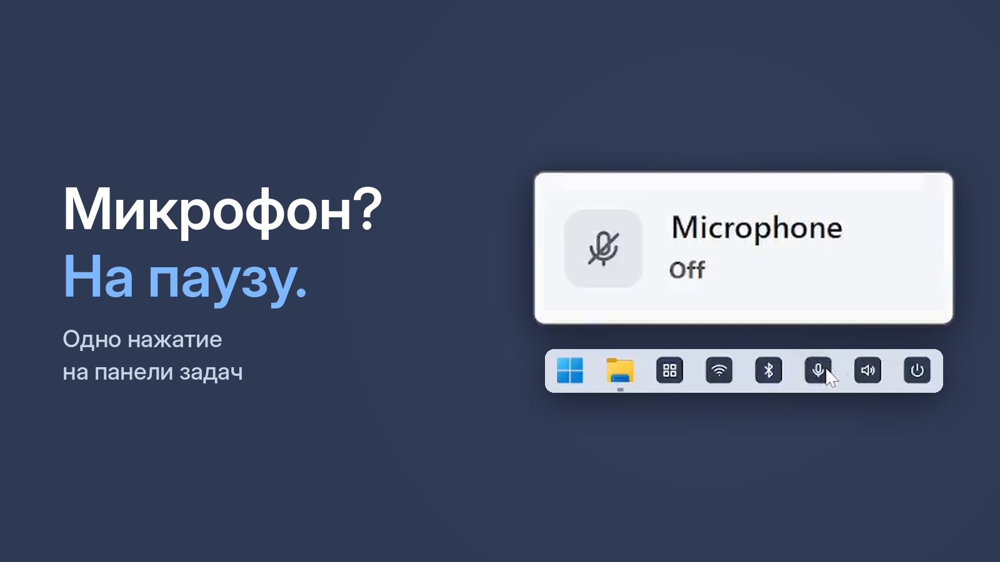

Как выключить микрофон на компьютере одной кнопкой — Windows 10 и 11

Звонок закончился, а микрофон всё ещё включён? Нужно быстро замолчать посреди созвона, не ища кнопку в каждом приложении? Вот способы выключить микрофон в Windows 10 и 11 — от встроенных до самого быстрого.
Способ 1. Через параметры Windows
- Нажмите Win + I и откройте Система → Звук.
- В разделе Ввод выберите микрофон и откройте его свойства.
- Выключите устройство: в Windows 11 кнопка называется «Не разрешать», в Windows 10 — флажок «Отключить». Можно также опустить громкость до нуля.
Работает надёжно, но это 5–6 щелчков, а включать обратно придётся тем же путём.
Способ 2. Кнопка в приложении созвона
В Zoom, Teams, Telegram и других есть своя кнопка микрофона. Минус: она выключает микрофон только в этом приложении — остальные программы по-прежнему вас слышат. В Windows 11 есть сочетание Win + Alt + K, но оно работает только во время звонка и только в приложениях, которые его поддерживают.
Способ 3. Одна кнопка на панели задач
One Click Switcher добавляет на панель задач кнопку «Микрофон». Один щелчок — выключаются сразу все микрофоны компьютера: встроенный, в наушниках, в веб-камере. Ещё щелчок — включаются обратно. Короткий звук и табличка «Микрофон выключен» показывают, что всё сработало.
Бесплатно · Windows 10 и 11 · без рекламы
Микрофон в веб-камере или USB не выключается?
У некоторых веб-камер и USB-микрофонов Windows не может выключить микрофон обычным способом. Для таких устройств One Click Switcher дополнительно снижает уровень микрофона до нуля, а при включении возвращает прежний.
Как проверить, что микрофон точно выключен
Откройте Параметры → Система → Звук и скажите что-нибудь: полоска уровня у микрофона не должна двигаться. Если сомневаетесь — сделайте короткую запись в приложении Windows для записи голоса. В One Click Switcher состояние видно в окне «Статус».